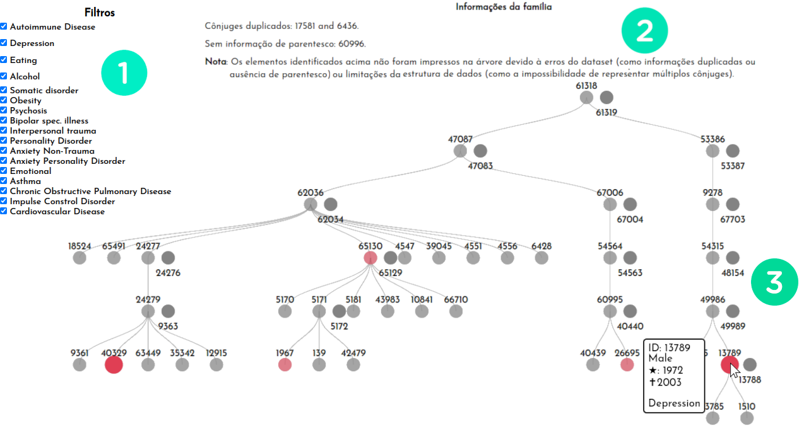
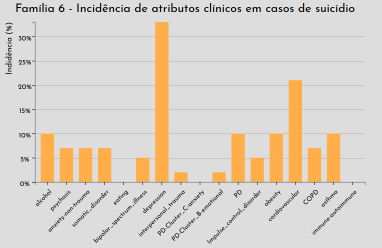
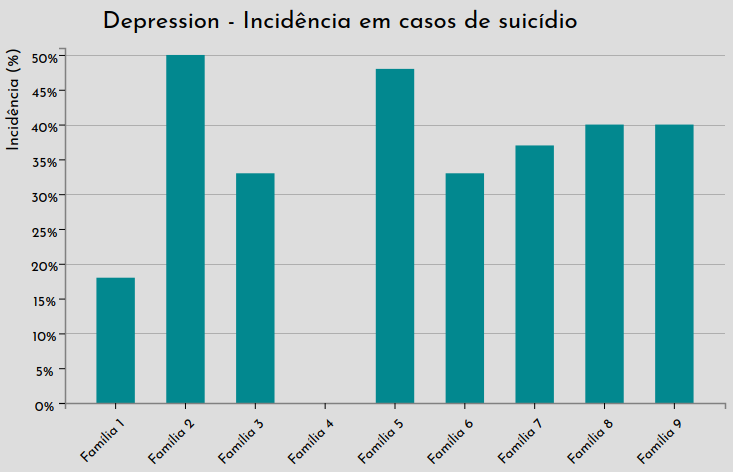

Challenge and Approaches
Given the two datasets "Family Attributes" and "Family Structure", tasks were specified for the creation of a visualization tool:
- (1) For a specific target individual, identify similar cases, including how they are related to each other (for example, if they co-occur in a particular family).
- (2) To characterize the distribution of clinical attributes for suicide cases in families with high incidence rates (high relative number of cases).
- (3) Characterize (that is, the relationship between cases and their attributes) suicide cases in families with a high incidence of a certain clinical attribute (such as depression).
- (4) Compare clinical information for suicide cases with your immediate relatives (siblings, parents and children).
Below are described the strategies used to solve these tasks.
Family Trees
Family trees are very useful for visualizing the general structure of a family and
also explore its members individually. Families when analyzed only in
general context can hide important information to assist professionals in
medical diagnostics. In view of these benefits, a visualization in
tree for each family, with the following characteristics:
- Filtering for specific clinical attributes, where the filtered nodes are incremented in opacity and circle diameter.
- Interactivity, presenting individual characteristics and attributes when sliding with the mouse over the nodes.

The figure above presents the tool's overview for the "family nine", where in
(1) it is possible to select the filters for the clinical attributes, so that if the person contains at least one of these attributes it will then be highlighted in the tree. In
(2) a brief technical description of the family is presented, indicating errors in the dataset or reporting other individuals not shown in the tree (such as the presence of multiple spouses, limited by viewing). Finally, in
(3) the family tree and an example of interactivity with the mouse that describes the characteristics of a person with depression in this family are presented (ID 13789).
In family trees it is possible to quickly identify
similar cases in a family, and still leave it up to the user to choose the degree of
kinship analyzed (brother, father, grandfather, uncles, etc.). This strategy was developed with a view to
tasks (1) and (4) presented above. The tool is available on the page
Family Trees.
Bar Graphs
Bar charts are highly recommended when you need to compare data,
from them our brain can have a better perception of the differences between
the data presented. This strategy was developed aiming at tasks (1) and (4) presented above.
And, in this work, we use bar graphs in the following situations:
- Charts by families where we present the percentage of the presence of some clinical attributes in cases of suicide in a specific family, in order to allow the user to easily analyze which clinical attributes are most present in each family. The graphics available in this approach are found on the Graphics: Families page.
- Graphs by clinical attributes , which similarly to the previous one, shows the percentage of the presence of a clinical attribute in cases of suicide in relation to the families analyzed, allowing the user to see which clinical attributes affect one family more than the others, in addition to illustrating which attributes appear on a larger scale and which are more recurrent. The graphics available in this approach are found on the Graphics: Clinical Attributes page.
Below is the graph for family six:

Below is the graph for the attribute "depression":
